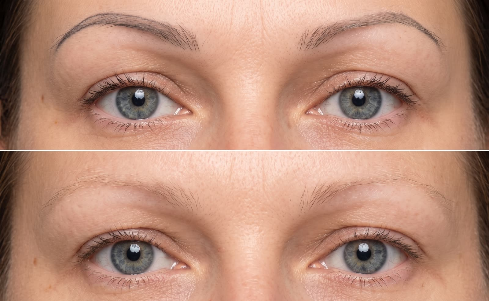

Usuwanie makijażu permanentnego removerem w Poznaniu
Masz stary makijaż permanentny, który jest za ciemny, zmienił kolor albo po prostu już Ci się nie podoba?
Nie zawsze dobrym rozwiązaniem jest przykrywanie go kolejną pigmentacją. Czasami najpierw trzeba usunąć część starego pigmentu lub odpowiednio go rozjaśnić. Dopiero wtedy możemy stworzyć nowy, lżejszy i bardziej naturalny efekt.
W Permanent Guru wykonuję usuwanie makijażu permanentnego removerem. Zanim zaczniemy, zawsze oglądam pigment i stan skóry, żeby ocenić, co w danym przypadku ma największy sens.
Kiedy warto rozważyć usuwanie permanentu?
Najczęściej zgłaszają się do mnie osoby, których brwi po kilku latach stały się szare, czerwone, bardzo ciemne albo mają kształt, którego nie da się już dobrze poprawić kolejnym zabiegiem.
Usuwanie może być dobrym rozwiązaniem, jeśli:
- pigment jest bardzo mocny i nasycony
- kolor permanentu zmienił się z czasem
- kształt brwi jest nierówny lub nie pasuje już do twarzy
- masz kilka warstw starego pigmentu
- poprzedni makijaż został wykonany zbyt głęboko lub zbyt intensywnie
- chcesz zrobić nowy permanent, ale najpierw potrzebujemy „czystszego" podłoża
Nie oznacza to jednak, że każdy stary makijaż permanentny trzeba usuwać. Czasami wystarczy korekta. Dlatego pierwszym krokiem jest zawsze ocena tego, co aktualnie znajduje się w skórze.
Jak działa remover?
Remover to preparat przeznaczony do pracy ze starym pigmentem w skórze. Podczas kolejnych zabiegów pigment stopniowo staje się jaśniejszy. Nie jest to metoda, przy której mogę uczciwie powiedzieć przed pierwszą wizytą: „potrzebujemy dokładnie dwóch zabiegów". Każdy permanent zachowuje się inaczej.
Duże znaczenie ma jego wiek, kolor, rodzaj użytego pigmentu, głębokość wcześniejszej pracy oraz to, ile razy brwi były już poprawiane. Dlatego działamy etapami i po każdym wygojeniu sprawdzamy rezultat.
Jak wygląda zabieg?
Na początku oglądam brwi i rozmawiamy o tym, jaki efekt chcesz osiągnąć. Czy zależy Ci na całkowitym usunięciu starego permanentu? Czy chcemy go tylko rozjaśnić, żeby później wykonać nowy? To ważna różnica. Jeżeli możemy wykonać zabieg, pracuję removerem tylko w obszarze, w którym znajduje się niechciany pigment.
Po zabiegu skóra może być zaczerwieniona i wrażliwa. Potrzebuje również czasu na spokojne wygojenie. Dostaniesz ode mnie dokładne zalecenia dotyczące pielęgnacji domowej. Dopiero po wygojeniu możemy realnie ocenić, jak dużo pigmentu udało się rozjaśnić.
Ile zabiegów będzie potrzebnych?
To zależy. Wiem, że to nie jest najbardziej satysfakcjonująca odpowiedź, ale przy usuwaniu permanentu jest po prostu najbardziej uczciwa.
Czasem pigment reaguje bardzo dobrze już po pierwszym zabiegu. Przy mocnych, starych lub wielokrotnie poprawianych brwiach potrzebnych może być kilka spotkań. Nie staram się usuwać wszystkiego za wszelką cenę podczas jednej wizyty. Ważniejsze jest dla mnie to, żeby skóra miała czas na regenerację.
Czy trzeba usunąć permanent całkowicie?
Nie zawsze. Jeżeli planujemy później wykonać nowy makijaż permanentny, często wystarczy rozjaśnić stary pigment do takiego poziomu, który pozwoli mi stworzyć nowy kształt i kolor bez dokładania kolejnej ciężkiej warstwy.
To właśnie dlatego przed rozpoczęciem usuwania dobrze jest wiedzieć, jaki ma być efekt końcowy.
Remover czy korekta?
Jeżeli patrzysz na swoje brwi i nie wiesz, czy potrzebujesz usuwania, czy można je jeszcze poprawić — nie musisz podejmować tej decyzji sama. Prześlij mi zdjęcie albo umów się na konsultację.
Czasami po obejrzeniu brwi od razu widzę, że korekta będzie wystarczająca. Innym razem lepiej najpierw zrobić krok wstecz, rozjaśnić stary pigment i dopiero potem stworzyć coś nowego.
Efekty usuwania
Przy tym zabiegu warto pokazywać nie tylko zdjęcie „przed" i „po", ale też kolejne etapy rozjaśniania — każdy pigment reaguje inaczej.

Cena i czas
- Usuwanie makijażu permanentnego removerem 200 zł ≈ 30 min.
Jeżeli nie wiesz, czy remover będzie odpowiedni w Twoim przypadku, zacznij od konsultacji. Dodatkowo płatne znieczulenie miejscowe – 100 zł.
Po usunięciu lub rozjaśnieniu pigmentu proponuję często nowy makijaż permanentny brwi, w tym metodę włoskową.
Sprawdź nasz cennik makijażu permanentnego w Poznaniu i umów bezpłatną konsultację.
Zarezerwuj wizytę
Konsultacja jest zawsze bezpłatna. Odpiszemy w ciągu 24 godzin — podaj preferowane daty, a dopasujemy termin do Twojego kalendarza.
Wolisz zadzwonić? Jesteśmy pod numerem +48 452 370 369, pon–pt 08–21, sob 08–18.
Najczęstsze pytania
Czy jeden zabieg wystarczy?
Czasami po jednym zabiegu widać dużą różnicę, ale nie można tego zagwarantować. Przy mocno nasyconym lub wielokrotnie poprawianym permanentcie zwykle trzeba pracować etapami.
Czy można usunąć stary microblading?
W wielu przypadkach można go rozjaśnić, ale najpierw muszę zobaczyć pigment i kondycję skóry.
Czy po removerze można zrobić nowy makijaż permanentny?
Tak. Bardzo często właśnie dlatego wykonujemy usuwanie — żeby przygotować brwi do nowej pigmentacji. Najpierw jednak skóra musi się całkowicie wygoić.
Jak wygląda skóra po zabiegu?
Bezpośrednio po zabiegu może być zaczerwieniona i bardziej wrażliwa. Później rozpoczyna się proces gojenia. Ważne jest, żeby nie przyspieszać go na własną rękę i stosować się do zaleceń pozabiegowych.
Czy remover jest lepszy od lasera?
To dwie różne metody i nie ma jednej odpowiedzi dobrej dla każdego. Wszystko zależy od rodzaju pigmentu, jego koloru, głębokości i tego, jaki efekt chcemy uzyskać.
Nie podoba Ci się Twój stary permanent?
Najpierw zobaczmy, co możemy z nim zrobić. Nie zawsze trzeba zaczynać wszystko od nowa i nie zawsze trzeba od razu usuwać cały pigment. Umów się na konsultację lub wyślij mi zdjęcie brwi.